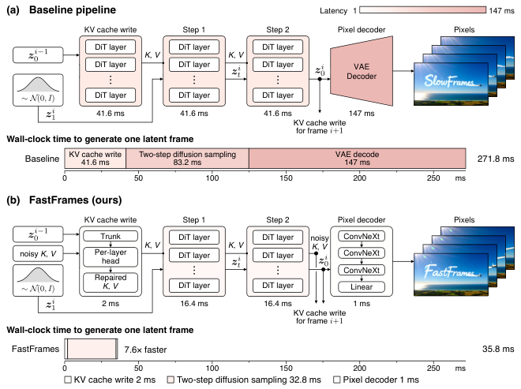

A kitchen speeds up its chef and still serves slowly. Timing every step shows the chef cooks fast, but plating takes twice as long as cooking, and someone re-tastes every dish before filing the recipe. FastFrames replaces the plating station and the second taster, then trims the walk between stations.
요리사를 빠르게 만들었는데도 음식이 늦게 나오는 주방이 있다. 단계별로 시간을 재 보니 요리는 빠른데 담는 데 요리의 두 배가 걸리고, 누군가 레시피를 기록하기 전에 모든 요리를 다시 맛본다. FastFrames는 담는 곳과 두 번째 시식을 바꾸고, 작업대 사이 동선까지 줄인다.
How it works: attack the accessories작동 방식은 부속 단계를 공략하기
Two of the three stages are not denoising at all. Shrinking them first leaves room for two diffusion steps inside the 50 ms budget.
세 단계 중 둘은 디노이징이 아니다. 이 둘부터 줄이면 50 ms 예산 안에 확산 두 단계를 넣을 여유가 생긴다.

- Drop the VAE.VAE 제거.Three causal ConvNeXt blocks run on the low-resolution token grid, then one linear layer unpatchifies to pixels. Pixel-space GAN training with a frozen DINOv3 discriminator restores sharpness.인과 ConvNeXt 블록 세 개가 저해상도 토큰 격자에서 돌고, 선형 층 하나가 픽셀로 펼친다. 고정된 DINOv3 판별기로 픽셀 공간 GAN 학습을 해서 선명도를 되살린다.
- Repair the cache cheaply.싼 캐시 복구.Instead of rerunning the DiT on the clean latent, a small network predicts residual fixes to the noisy keys and values.깨끗한 잠재 벡터로 DiT를 다시 돌리는 대신, 작은 네트워크가 노이즈 섞인 키와 값에 대한 잔차 보정을 예측한다.
- Tune the system.시스템 최적화.Persistent cache buffers, fused QKV, split-KV attention and CUDA graphs cut a DiT pass from 41.6 to 16.4 ms. Context parallelism splits it across eight GPUs.고정 캐시 버퍼, QKV 융합, KV 분할 어텐션, CUDA 그래프로 DiT 패스를 41.6 ms에서 16.4 ms로 줄인다. 컨텍스트 병렬화로 GPU 여덟 장에 나눈다.
Key point: the only model under 50 ms핵심은 50 ms 아래로 내려온 유일한 모델
Every 1.3B autoregressive baseline needs a quarter second or more per frame. FastFrames fits inside the interactive threshold on a single GPU.
1.3B 자기회귀 기준선은 모두 프레임당 0.25초 이상이 걸린다. FastFrames는 GPU 한 장으로 인터랙티브 기준선 안에 들어온다.
Results: speed without a quality tax결과는 품질 손실 없는 속도
At both sizes, FastFrames matches or slightly beats the VBench score of a base that shares its DiT backbone, at a fraction of the latency.
두 크기 모두에서 FastFrames는 같은 DiT 기반의 모델과 VBench 점수가 같거나 약간 높고, 지연은 훨씬 짧다.
| Model | Size | Latency (ms) | VBench total |
|---|---|---|---|
| Wan2.1 (bidirectional) | 1.3B | 30,444 | 83.80 |
| Causal Forcing++ | 1.3B | 272 | 84.11 |
| FastFrames-S | 1.3B | 36 | 84.23 |
| Krea-Realtime | 14.3B | 1,675 | 84.42 |
| FastFrames-L, 8 GPUs | 14.3B | 45 | 84.44 |
Measure latency per response, not frames per second, and profile before you distill further. Once sampling is down to two steps, the decoder and cache bookkeeping are where the time goes.초당 프레임이 아니라 응답당 지연을 재고, 증류를 더 하기 전에 먼저 프로파일링하자. 샘플링이 두 단계까지 줄면 시간은 디코더와 캐시 관리에서 나간다.
All numbers are 480p on B200 GPUs, and 720p is much slower. The pixel head must be retrained per model, the 14B result needs eight GPUs, and camera- or physics-conditioned models reach about 51 ms only on eight GPUs.모든 수치는 B200 GPU에서 잰 480p 결과이고, 720p는 훨씬 느리다. 픽셀 헤드는 모델마다 다시 학습해야 하고, 14B 결과에는 GPU 여덟 장이 필요하며, 카메라나 물리 조건을 거는 모델은 GPU 여덟 장을 써야 약 51 ms에 이른다.